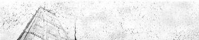

Составлен в зимний английский период.
Скука, грусть и самокапание в глубинах своих желаний и возможностей,
противоречий и отголосков прошлого с переплетением в настоящее.
Эксперементирование с бронзовыми струнами в сочитании с мысленными вкраплениями клавишь.
Кристальная чистота перед затерявшимся эго.

::
» Где-то там, за Рекой за стеклянным мостом... (.06)
» Как много душ порой уносит сон...
я выжил в этом мире, я навсегда смешен...(.08)
/back_cover/.
|